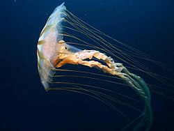

Invertebrados
¿Qué son los Celenterados?
.jpg)
Los radiados (Radiata), celentéreos o celenterados (Coelenterata) son un taxón parafilético empleado históricamente para agrupar a los más primitivos animales eumetazoos, habitualmente en oposición a los pertenecientes a Bilateria, es decir, enfatizando la presencia de una simetría radiada en vez de bilateral en el adulto. Formaban un antiguo filo de animales que incluía principalmente a los cnidarios y los ctenóforos. Existe unanimidad en que estos dos grupos representan filos separados y se duda de si están directamente emparentados. El antiguo nombre celentéreos también es utilizado por algunos autores, que lo emplean como sinónimo de Cnidaria.
El empleo de las características de la simetría radiada, especialmente la pentarradiada, en taxonomía y sistemática presenta sus inconvenientes. Existen multitud de convergencias evolutivas en animales de cualquier nivel en la escala filogenética: por ejemplo, los equinodermos, que presentan simetría pentarradiada, no pertenecen al grupo Radiata; de hecho, su larva posee simetría bilateral.
Terminología e historia
Coelenterata viene del griego antiguo κοῖλος (koilos=“hueco”) y ἔντερον (énteron = tripas, intestinos) en alusión a la cavidad digestiva de una sola abertura. Radiata (Linnaeus, 1758) viene del latín radio “brillar”, en alusión a la morfología radiada o alrededor de un centro. Tanto Coelenterata como Radiata pueden incluir o excluir a Porifera según los sistemas de clasificación (ver Diploblasta).
Georges Cuvier definió en 1817 a Radiata para agrupar cnidarios y ctenóforos. Thomas Cavalier-Smith redefine en 1983 a Radiata como un subreino que albergaba a los filos Myxozoa, Placozoa, Cnidaria y Ctenophora.
En cambio, la clasificación de Lynn Margulis en cinco reinos sólo incluía a Cnidaria y Ctenophora en los radiados; el elemento definitorio aquí, además de la simetría, es el número de hojas embrionarias: incluye sólo a los animales diblásticos, es decir, con endodermo y ectodermo, y excluye a los considerados monoblásticos como las esponjas, aunque no hay acuerdo en este punto.

Características
Hay características superficiales que son comunes; muchos cnidarios, ctenóforos y placozoos suelen ser muy blandos, gelatinosos, globosos, transparentes y con gran contenido líquido. Cnidarios y ctenóforos comparten algunas características primitivas, como su organización diblástica (solo tienen dos hojas embrionarias, ectodermo y endodermo) y la ausencia de ano en el aparato digestivo, que tiene forma de saco, sin embargo, los ctenóforos poseen dos poros anales en el extremo opuesto a la boca. Se considera que tienen simetría radial, sin embargo, los ctenóforos tienen una simetría que podría considerarse birradial rotacional.
Por otro lado las diferencias son marcadas; por un lado los cnidarios tienes dos formas vitales, el pólipo y la medusa, además los cnidarios tiene células urticantes, mientras que los ctenóforos tiene coloblastos, unas células productoras de una sustancia pegajosa que sirve para atrapar a sus presas. Los placozoos están muy simplificados y son ameboides.
Clasificación
Eumetazoos
Los eumetazoos (Eumetazoa) son los animales que presentan tejidos propiamente dichos; comprenden la totalidad de los metazoos, con la única excepción de los poríferos (las esponjas, en las que en lugar de tejidos existe una organización similar a una colonia) y los extintos arqueociatos. Los eumetazoos se caracterizan por tener capas germinativas, es decir, ectodermo, endodermo y opcionalmente mesodermo, por formar auténticos tejidos a partir de la especialización celular, por la posesión de órganos, y por tener cavidad o tubo digestivo que se abre al exterior al menos por un orificio bucal, que puede perderse por adaptación al parasitismo.
Dentro de los eumetazoos, la mayoría pertenece al subreino Bilateria. Fuera de este solo se cuentan tres filos, dos que presentan simetría radial, carecen de órganos propiamente dichos y tienen cavidades digestivas con una sola abertura, que cumple funciones tanto de ingestión como de excreción —estos son los cnidarios, que abarca las anémonas, los corales y las medusas, y los ctenóforos— y uno, los placozoos, que carecen de cavidad digestiva permanente.
Cnidaria
Los cnidarios (Cnidaria, del griego ''kníde'', ortiga) (pronunciación: [nidarios]) son un filo de animales diblásticos relativamente simples, que viven exclusivamente en ambientes acuáticos, mayoritariamente marinos. Agrupa alrededor de 10 000 especies, englobando medusas, pólipos, corales, anémonas e hidras (únicos cnidarios que habitan en agua dulce).
El nombre del filo alude a una característica diagnóstica propia de estos animales, la presencia de unas células urticantes llamadas cnidoblastos, presentes en los tentáculos y boca de todos los miembros del filo; estos funcionan como cavidad y se encargan de guardar los cnidocitos, que son cápsulas en donde es almacenado el veneno y son lanzadas mediante un filamento hacia la presa, enganchándola con un aguijón para poder liberar las toxinas. Tienen simetría radial y su plan corporal es en forma de saco. Son los animales más simples que presentan células nerviosas y órganos de los sentidos (estatocistos, ocelos).
Son un grupo antiguo, con una larga historia fósil que se remonta, probablemente, a la fauna del Precámbrico, hace unos 700 millones de años. No obstante, análisis genéticos del reloj molecular de sus mitocondrias sugieren una edad muy anterior para el grupo corona de todos los cnidarios, estimada en unos 741 millones de años, mucho antes de que haya fósiles que hayan perdurado hasta la actualidad.
Ctenophora
Los ctenóforos (Ctenophora, del griego Κτενός ctenos, «peine», y φόρος phoros, «portador») (pronunciación: [tenóforos]) son un filo de animales diblásticos caracterizados por la presencia de unas células especializadas, los coloblastos, que producen una sustancia pegajosa utilizada para capturar las presas. Son exclusivamente marinos y se han descrito 166 especies. Aunque poco conocidos, son muy abundantes en los mares de todo el mundo constituyendo una elevada proporción de la biomasa del plancton. Algunos tienen apariencia parecida a medusas, motivo por el cual fueron agrupados con ellas en el antiguo filo de los celentéreos, y otros parecen gusanos aplanados en los fondos oceánicos (formas reptantes). Viven desde la superficie hasta 3000 metros o más de profundidad.
.jpg)
Relaciones filogenéticas
La estructura diblástica y la presencia de una sola abertura y cavidad hizo creer que los cnidarios y los ctenóforos estaban relacionados. No hay otros datos que demuestren que ambos grupos comparten un antepasado común. Por tanto, hoy hay un acuerdo general en que la similitud entre Ctenophora y Cnidaria (la forma medusa) es debida a convergencia evolutiva por el hecho de estar ambos adaptados a la vida pelágica. Los ctenóforos bentónicos no se parecen en absoluto a los pólipos. Los ctenóforos carecen de ciclo metagénico y de cnidoblastos característicos de los cnidarios, y en cambio sí tienen coloblasto.
ParaHoxozoa
ParaHoxozoa es un clado fundamental dentro de la filogenia animal. Indica que los eumetazoos tuvieron una divergencia importante entre tres grupos los placozoos, cnidarios y bilaterales. Su descubrimiento se basó en el estudio de los genes homeóticos, ya que los genes Hox se originaron en este clado. Ya los primeros animales adquirieron múltiples genes similares a los NK, pero es en el clado ParaHoxozoa donde se originan los genes Hox, ParaHox y EHGbox. El arrastre del código Hox en el desarrollo de los eumetazoos, pudo haber contribuido en la evolución de su complejidad morfológica y en la diversificación de los planes corporales bilaterales durante la explosión del Cámbrico.
Placozoa
Los placozoos (Placozoa) son un filo descrito por el zoólogo alemán Franz Eilhard Schulze (1840 - 1921), a partir de pequeños animales planos y reptantes encontrados en un acuario marino del Instituto de Zoología de Graz (Austria). Los interpretó como nuevos animales relacionados con la teoría de la plánula. Por varios años, la única especie validada de placozoos fue Trichoplax adhaerens. Recientemente, Hoilungia hongkongensis y Polyplacotoma mediterranea fueron validadas como dos especies nuevas. Asimismo, se ha sugerido que pueden existir hasta cien especies, aún desconocidas.
Posiblemente sea el animal de estructura más simple existente en nuestro planeta. Vive en aguas marinas y presenta el aspecto de una torta minúscula compuesta por multitud de células. Trepa a las rocas y devora cualquier alga que viva sobre ellas. Aunque es un organismo algo más complejo que los protozoos, no posee ningún órgano especializado. Al principio se pensó que se trataba de la larva de algún animal.
Bilateria
Los bilaterales (Bilateria) son los animales con simetría bilateral, por la cual el organismo es simétrico respecto a un plano (plano sagital) que divide el cuerpo en dos mitades especularmente idénticas. Este tipo de simetría es el más extendido en el reino animal. La simetría bilateral se relaciona con la motilidad. Todos los filos triblásticos presentan simetría bilateral, aunque secundariamente puedan perderla en estado adulto, como sucede en los equinodermos.
.jpg)
Anthozoa
Los antozoos (Anthozoa, del griego ανθος anthos, flor, y ζωον zoon, animal) son una clase de animales del filo Cnidaria que presentan exclusivamente forma de pólipo. Incluye especies tan conocidas como las anémonas de mar, los corales y las plumas de mar; pueden ser solitarios o coloniales, con esqueleto o sin esqueleto. Se conocen más de 6000 especies, todas marinas.

Myxozoa
Los mixozoos (Myxozoa, del griego: μυξ, "moco" y ζῷο, "animal") son una clase de animales parásitos microscópicos, con más de 2000 especies, clasificados durante mucho tiempo como protozoos dentro de los esporozoos (con el nombre de Myxosporidia). No obstante, al ir conociéndose detalles sobre su naturaleza, se han clasificado actualmente en una clase de Cnidaria, y se cree que provendrían de animales pluricelulares muy simplificados. Actualmente los mixozoos son animales ameboides unicelulares de esporas pluricelulares.
Muchos mixozoos tiene un ciclo de doble hospedador en el que a una fase en un pez sucedería una fase en un anélido o briozoo. La parasitación ocurre por esporas con válvulas que contendrían uno o dos esporoblastos y una o dos cápsulas con filamentos que anclarían la espora al hospedador. Se liberarían unos esporoblatos móviles ameboides (amébulas) que penetrarían en los tejidos del organismo anfitrión desarrollándose como uno o varios plasmodios, algunos núcleos después se aparejarían (uno se tragaría otro) para formar nuevas esporas.